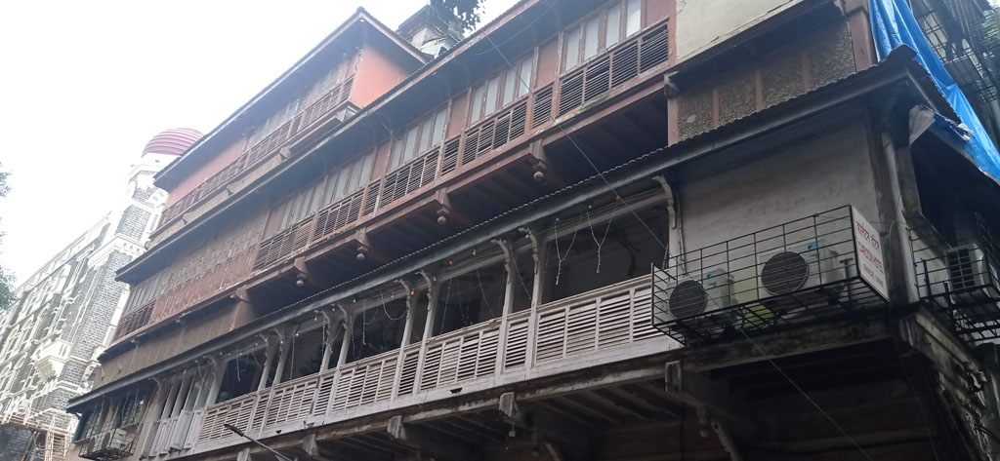
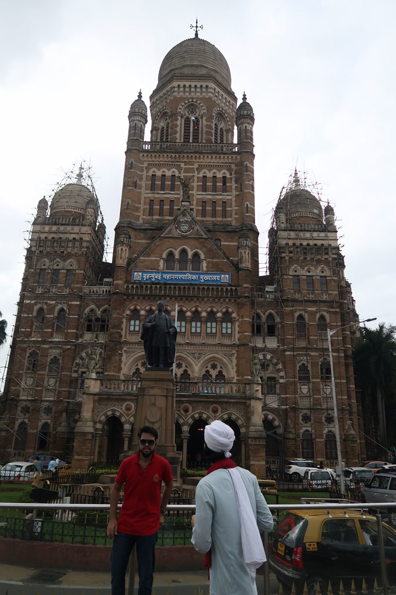
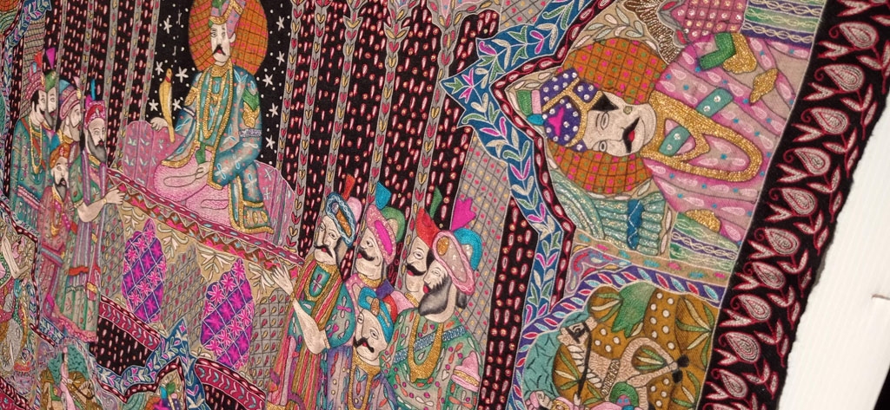
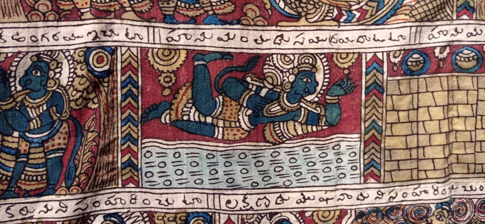
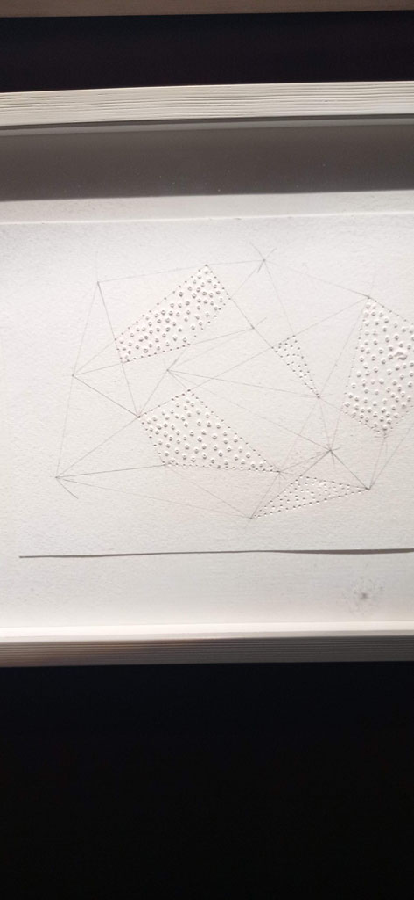
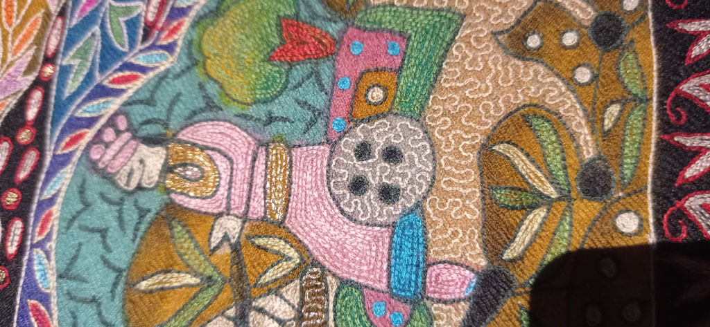
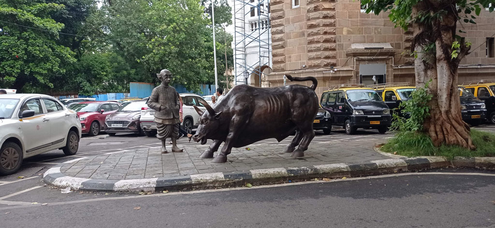
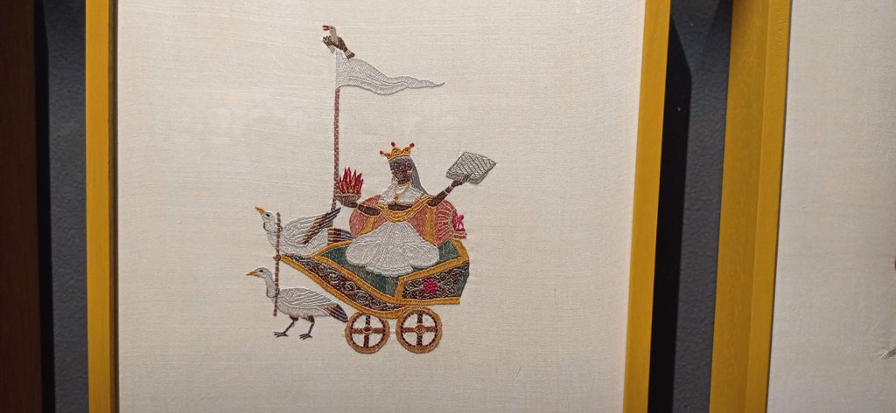
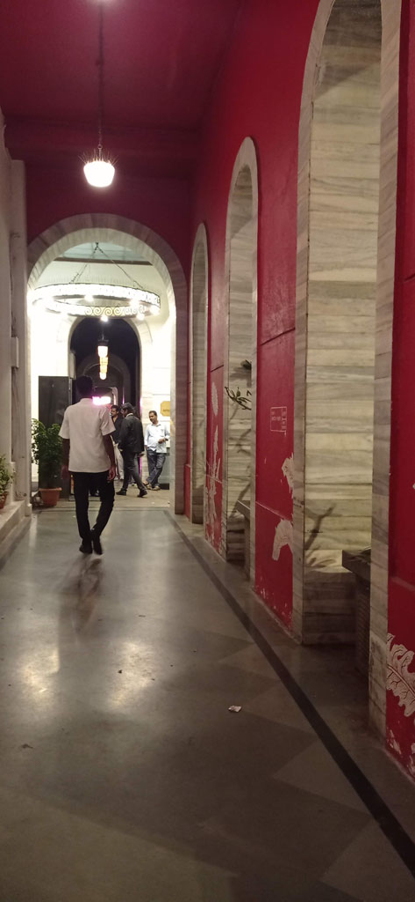

Karnataka / Dernier jour à Mumbaï

Pas de notes pour cette dernière journée à Mumbaï.
Dans mes souvenirs : grosse pluie le matin.
Visite d’un très beau musée / galerie sur la broderie et l’art par les femmes en inde (National Gallery of Modern Art)
Achat de strikers de carrom dans les boutiques de sport (Bombay Sports et Pioneer Sports).

Nous revenons à pieds le long de la gare victoria (Chhatrapati Shivaji Maharaj Terminus)







Le taxi vient nous chercher à 18h30 comme convenu pour nous emmener à l’aéroport. L’autoroute passe au dessus de la mer sous un ciel noir de mousson et des vagues blanches. Arrivés en avance à l’aéroport nous mangeons dans une chaine indienne notre dernier puri.